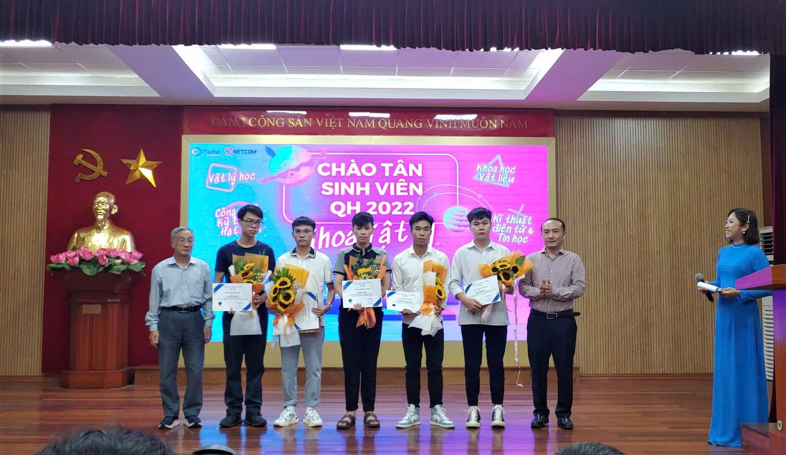
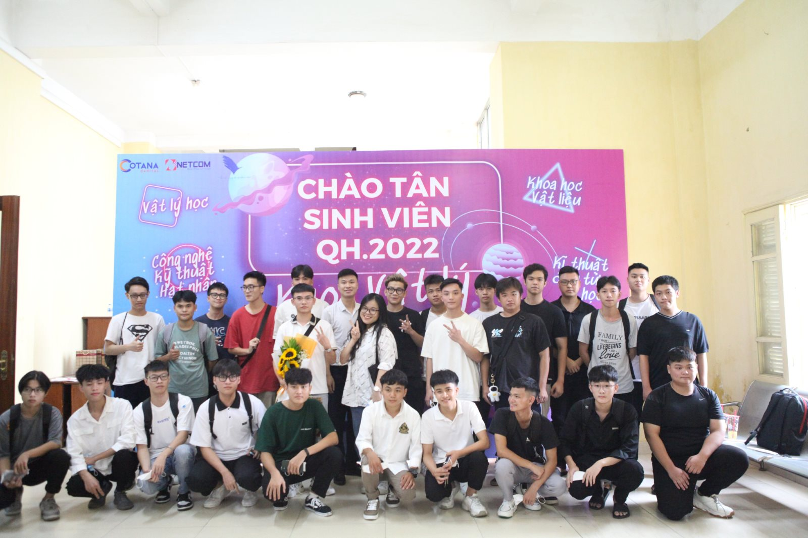
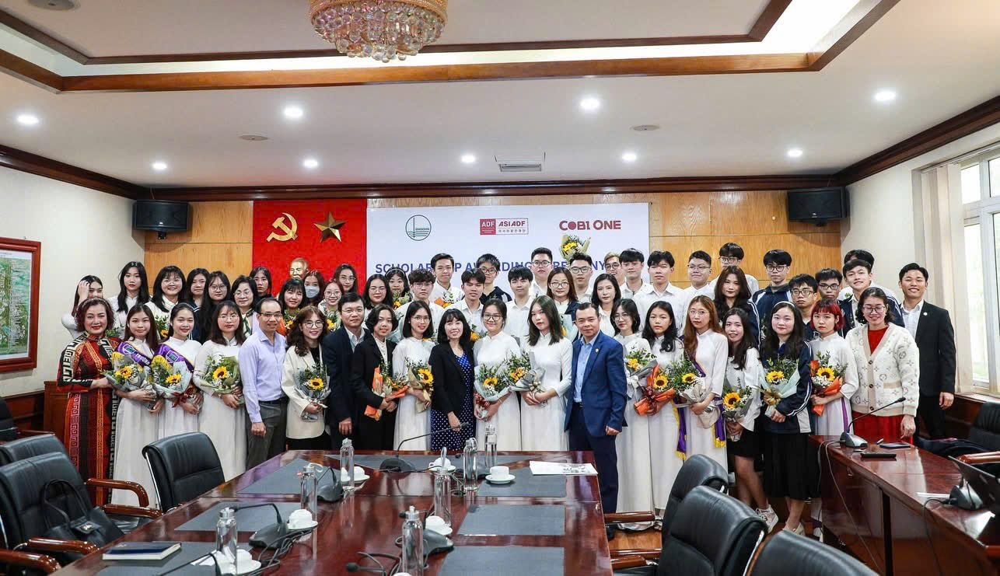
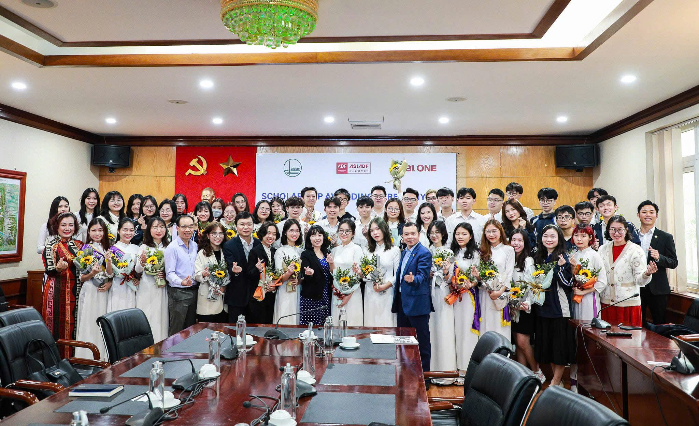
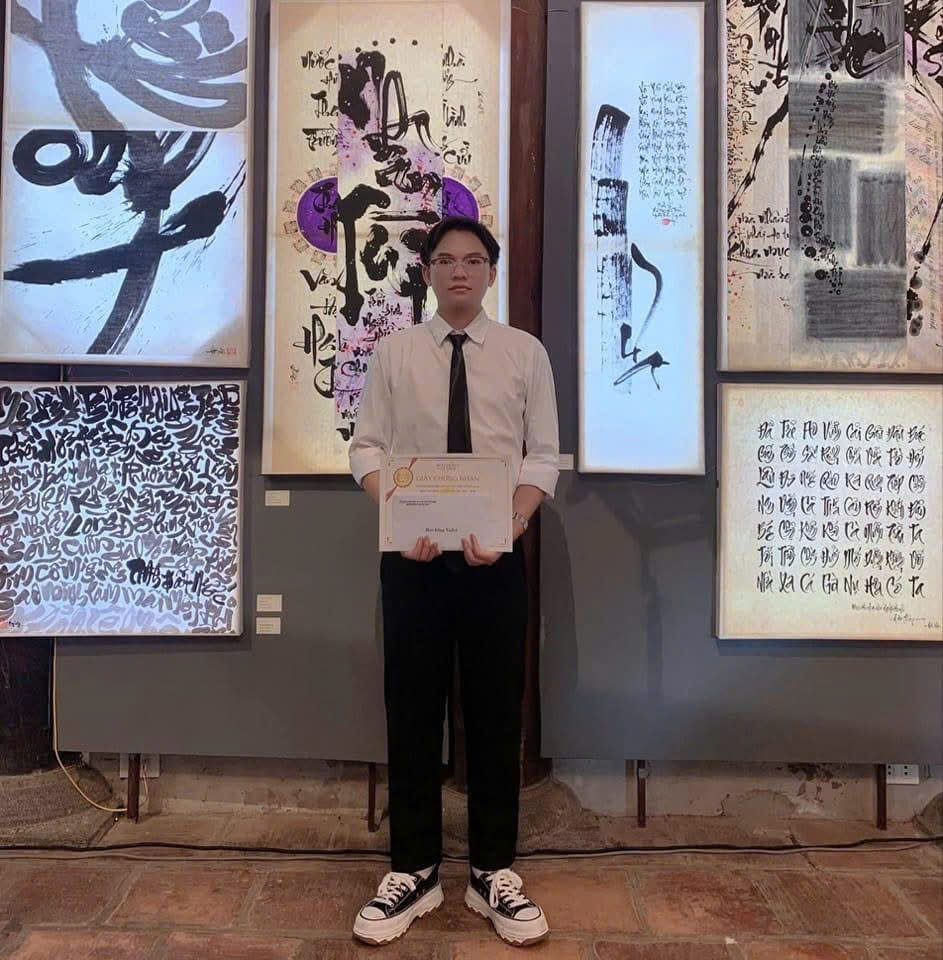
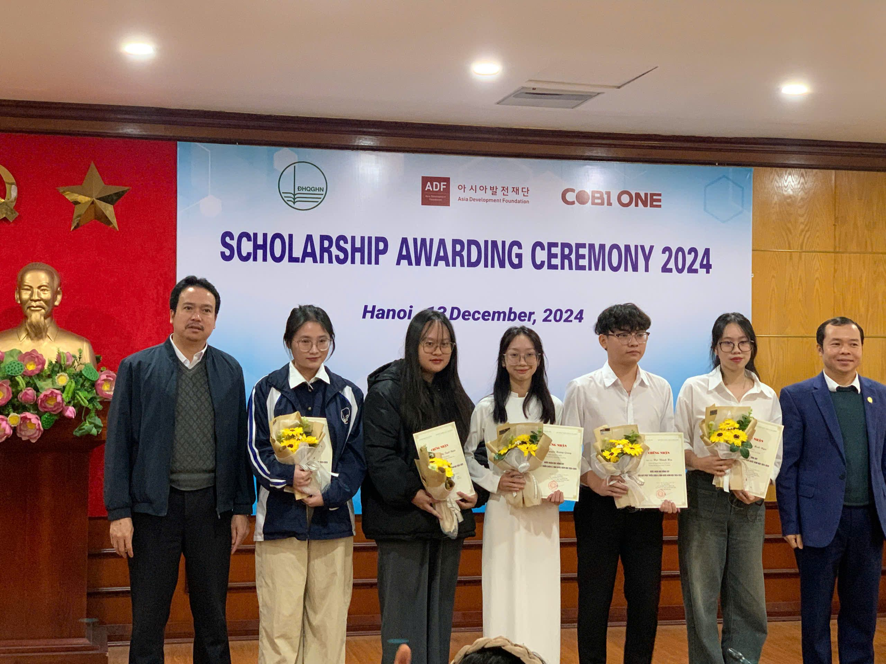
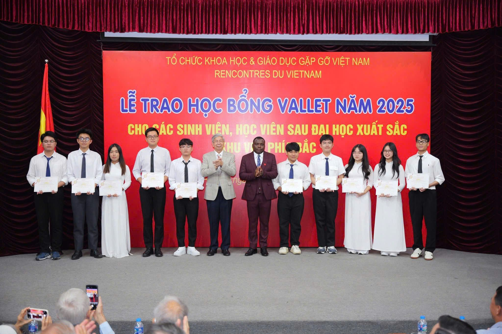
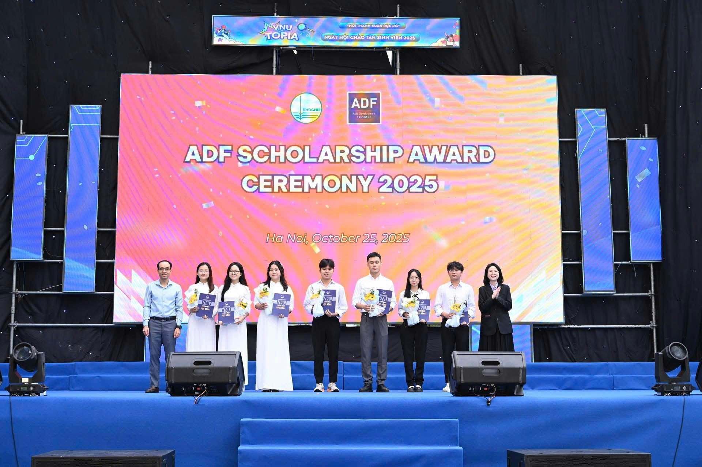
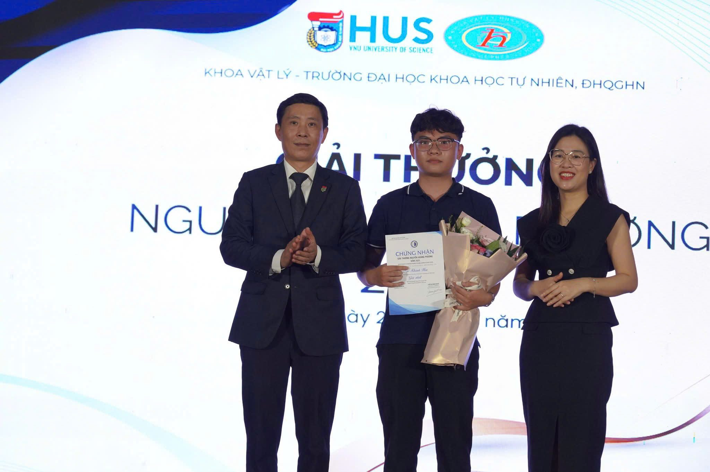
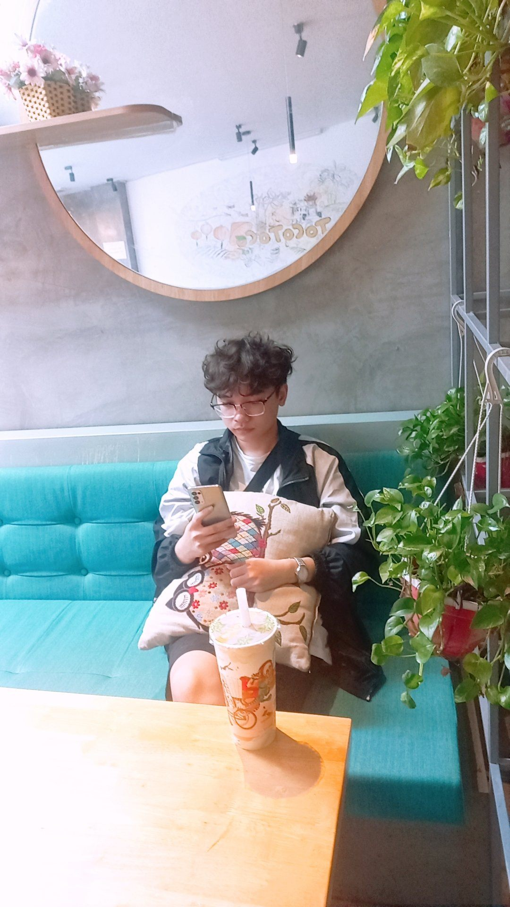

Chương mở đầu
Từ tân sinh viên tới lời hứa phải cố gắng thật bền.
Năm 2022 là điểm xuất phát: một bức ảnh nhập học, một danh hiệu đầu vào và một lời hứa sẽ đi bốn năm này thật nghiêm túc.

Graduation Invitation
Trân trọng mời bạn tới chung vui trong khoảnh khắc tốt nghiệp, khép lại một hành trình đẹp và mở ra chặng đường mới.
First chapter
Có những hành trình bắt đầu bằng một tấm ảnh tập thể: nhiều gương mặt còn lạ, một căn phòng đông tiếng nói và cảm giác vừa hồi hộp vừa háo hức. Từ ngày ấy tới hôm nay là những năm tháng học tập, thử sức, va chạm và trưởng thành.
Vì vậy, ảnh nhập học được đặt thành một dấu mốc lớn trong trang này: để ngày tốt nghiệp không chỉ là điểm kết, mà còn là khoảnh khắc nhìn lại nơi mọi thứ bắt đầu.
Timeline 2022 - 2026
Từ ngày nhập học, những buổi đầu còn bỡ ngỡ, tới các mùa học bổng, hoạt động khoa học và khoảnh khắc chia tay năm cuối. Mỗi năm là một đoạn ký ức, nối lại thành hành trình EEI trước ngày tốt nghiệp.

Năm 2022 là điểm xuất phát: một bức ảnh nhập học, một danh hiệu đầu vào và một lời hứa sẽ đi bốn năm này thật nghiêm túc.
Một khởi đầu đáng nhớ, mở ra bốn năm học tập nhiều kỳ vọng.

Phần thưởng đầu tiên cho những nỗ lực trong năm học mới.

Một năm nữa của sự kiên trì, kỷ luật và tinh thần học tập đều đặn.

Một cột mốc ghi nhận hành trình học tập và nghiên cứu nghiêm túc.

Không chỉ là thành tích, mà còn là lời nhắc rằng mọi nỗ lực đều có dấu vết.

Một lần nữa được ghi nhận trước khi bước vào chặng nước rút cuối cùng.

Một dấu mốc đẹp ở đoạn cuối của hành trình đại học.

Sự ghi nhận trọn vẹn hơn cho những cố gắng trước ngày tốt nghiệp.
Save the date
Sự hiện diện của bạn sẽ làm ngày tốt nghiệp của Khánh Hoa thêm trọn vẹn. Hãy ghé qua, gửi một nụ cười, chụp vài tấm ảnh và cùng nhau giữ lại một dấu mốc đáng nhớ.
13h30 tới 16h00
Số 19 Lê Thánh Tông, phường Cửa Nam, Hà Nội
Class of 2026
Một chi tiết nhỏ gợi lại những năm tháng đã đi qua: những bài học, những lần cố gắng và cả niềm vui khi được đứng trong khoảnh khắc trưởng thành.
Journey
Có ảnh tập thể, có hoạt động khoa học, có những chuyến đi và cả những khoảnh khắc rất đời thường. Mỗi tấm ảnh giữ lại một phần của hành trình trước khi bước tới ngày tốt nghiệp.
Một tấm ảnh giữ lại cảm giác vừa vui, vừa tiếc, vừa biết rằng ai cũng sắp bước sang một hành trình mới.

Timeline
Gặp nhau tại hội trường, chuẩn bị hoa và ảnh kỷ niệm.
Cùng chứng kiến khoảnh khắc nhận bằng và chúc mừng.
Lưu lại những tấm hình với gia đình, bạn bè và người thân.
Lời tri ân
Ngày tốt nghiệp không chỉ là một cột mốc cá nhân, mà còn là kết quả của sự dìu dắt, định hướng và tin tưởng mà Khánh Hoa may mắn nhận được trong suốt hành trình học tập.
Người thầy chủ nhiệm và người định hướng từ những ngày đầu
Em xin gửi lời tri ân sâu sắc tới PGS.TS Đỗ Quang Lộc, người thầy chủ nhiệm đã luôn quan tâm, định hướng và dẫn dắt em từ những ngày đầu tiên còn nhiều bỡ ngỡ. Thầy không chỉ cho em những gợi mở quan trọng trên con đường học tập và nghiên cứu, mà còn giúp em nhìn rõ hơn cách bước đi nghiêm túc, bền bỉ và có trách nhiệm với lựa chọn của mình.
Sự tận tâm, sự nghiêm khắc và niềm tin mà thầy dành cho em là một điểm tựa rất lớn để em có thêm động lực vượt qua từng giai đoạn khó khăn, trưởng thành hơn và đi tới ngày hôm nay với lòng biết ơn thật sâu.
Người trực tiếp hướng dẫn đề tài và khóa luận
Em xin chân thành cảm ơn TS. Phan Hoàng Anh, người thầy đã trực tiếp hướng dẫn, góp ý và đồng hành cùng em trong quá trình thực hiện các đề tài cũng như khóa luận tốt nghiệp. Từng nhận xét, từng lần chỉnh sửa và từng lời khuyên của thầy đã giúp em hiểu vấn đề sâu hơn, làm việc cẩn thận hơn và biết cách hoàn thiện nghiên cứu của mình.
Với em, sự đồng hành của thầy là một phần rất quan trọng trong hành trình này. Em biết ơn thầy vì sự kiên nhẫn, tận tình và trách nhiệm mà thầy đã dành cho em, để em có thể tự tin khép lại chặng đường đại học bằng một dấu mốc thật ý nghĩa.
RSVP
Nhập họ tên để nhận thiệp mời dự lễ tốt nghiệp kèm lời cảm ơn riêng dành cho bạn.
Ngô Khánh Hoa
Trân trọng kính mời
Tới chung vui trong lễ tốt nghiệp của Ngô Khánh Hoa.
Ngô Khánh Hoa
Guestbook
Một lời nhắn nhỏ cũng đủ để ngày này có thêm một điều đáng nhớ. Những dòng lưu bút sẽ được giữ lại trên trình duyệt của bạn.